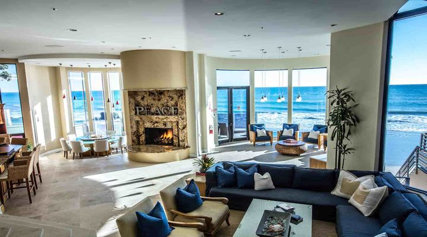

::..Disclaimer..::
::.. U.S.A. Fair Use Policy ..::
The Fair Use Policy Act Allows for public and private broadcast
of media on any website as long as you can claim no copyright or ownership
of the media presented on your page.
We here at "NiTeLiFe" claim no such rights to any or all media broadcast
on our radio station. All media presented here is for entertainment purposes
only. Please support the artists by purchasing the music from your favorite retailer.
Thank You and Enjoy,
The NiTeLife Family!
All Images, Codes, & Streamed Audio can be found on the net.